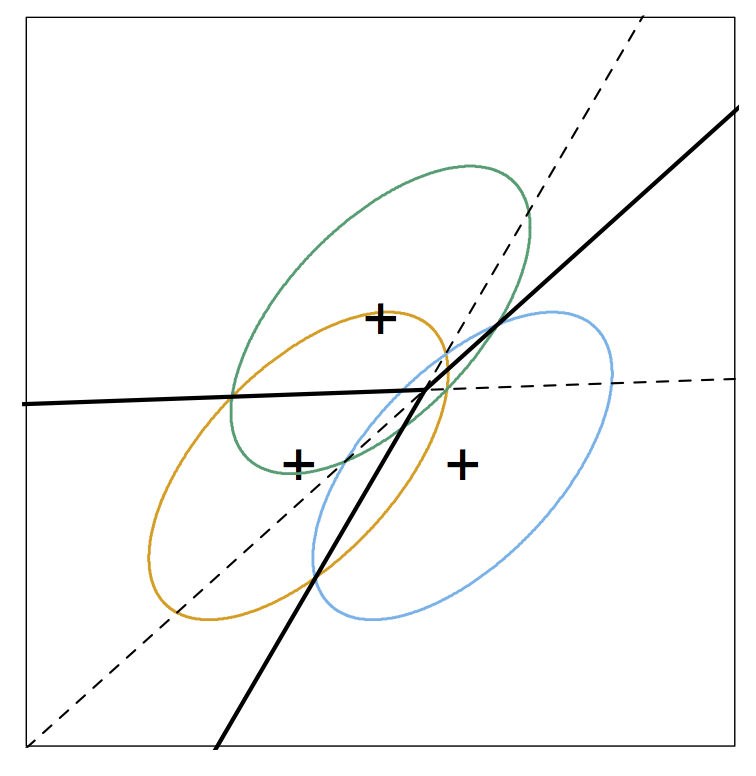

Stat 470/670 Lecture 19: Linear Discriminant Analysis
Julia Fukuyama
October 23, 2018
Today: Linear discriminant analysis
I'll give you two interpretations of linear discriminant analysis so that you have some idea where it comes from and to give you intuition into when it is likely to perform well.
We'll go back to the congressional voting data and see how LDA helps us understand other divisions among the senators.
Problem Setup
We have \(p\) of "predictor" variables and \(n\) cases.
We have a special "response" variable, and we are interested in how it is related to the predictors.
Today we will talk about linear discriminant analysis and the case where the response is categorical, so something like party ID.
Potential questions: Is there a relationship between the response and the predictors? If so, what is that relationship? How good of a job can the predictor variables do in explaining the response? Which predictors are most important?
LDA: Probabilistic Interpretation
Reading: Section 4.3 in ESL
LDA is based on a simple probabilistic model, where we assume that within each group, the predictor variables come from a multivariate normal distribution with a group-specific mean and a covariance matrix that is the same for each group.
In math: Let \(\mathbf x_i \in \mathbb R^p\) be the values for the predictor variables for case \(i\), and let \(y_i \in \{1,2,\ldots, K\}\) describe the group membership for case \(i\). Then our model is \[
\mathbf x_i \sim \mathcal N(\mathbf \mu_{y_i}, \mathbf \Sigma)
\]
In pictures:

In this case, we have three classes.
Each class comes from a bivariate normal distribution with its own centroid (the + mark on the graph).
Each class has the same covariance. The ellipse indicates a level curve for the density of each class, and each class having the same covariance corresponds to the ellipses being the same shape.
The solid lines indicate the Bayes decision boundaries.
If we knew \(\mathbf \mu_{y_i}\) and \(\mathbf \Sigma\), we could use Bayes' rule to obtain \(\mathbf P(y_i \mid \mathbf x_i)\).
However, we don't know either, and so we estimate them from the data and use the estimates to predict which group each case belongs to.
This procedure turns out to give linear decision boundaries, hence the name linear discriminant analysis.
LDA: Projection Interpretation
Reading: ESL 4.3.3
The probabilistic interpretation of LDA is nice, but what makes it particularly useful is that it also gives us an informative low-dimensional projection of the data.
In PCA, we projected the data so as to maximize the variance of the projection, but we noticed that this projection won't necessarily be informative about the groups we are interested in.
In LDA, if we have \(K\) groups, we can project the data into \(K-1\) dimensions, the space spanned by the estimated group means, and retain all the information necessary for classification using the model we defined above.
Fisher's linear discriminant
Fisher posed a different problem and ended up with the same solution. He was interested in projecting the predictors in such a way as to maximize the ratio of the within-class to between-class variance.
If you want more details you can read about it in Section 4.3.3 of ESL, but the main point to take away here is that in this derivation of LDA, there is no reference to a probabilistic model or to Gaussian distributions. Therefore, we don't need to assume anything about our predictors for LDA to be a reasonable tool for predicting group membership.
LDA biplots
Reading: Greenacre Chapter 11
Since LDA gives a projection of the data onto a lower-dimensional space, LDA biplots work the same way as PCA biplots:
We get biplot points for the observations and biplot axes for the variables.
Variables with longer biplot axes are more "important" for explaining the response.
When we look at an LDA biplot, we look at which direction each class centroid is in, and then identify biplot axes that point in that direction (or in the opposite direction) and have large magnitudes. These axes will correspond to the most important variables for explaining that class.
LDA: Practical considerations
LDA will fail/not work well if
You have more variables than observations. Computationally, we need to invert an estimate of the covariance matrix, and so if \(p > n - K\), the estimated covariance will be singular and this will be impossible.
Even if you \(p\) strictly less than \(n-K\), LDA still might not perform that well. In general, you want to have \(p\) substantially less than \(n\), and it often helps to filter out variables you don't think will be useful before running LDA.
Note: The problem of \(p\) on the same order or larger than \(n\) motivated work on a large class of models referred to as regularized, and we'll look at some of these later.
You have outliers in the predictors. This is because the procedure relies on non-robust estimates of the mean and the covariance.